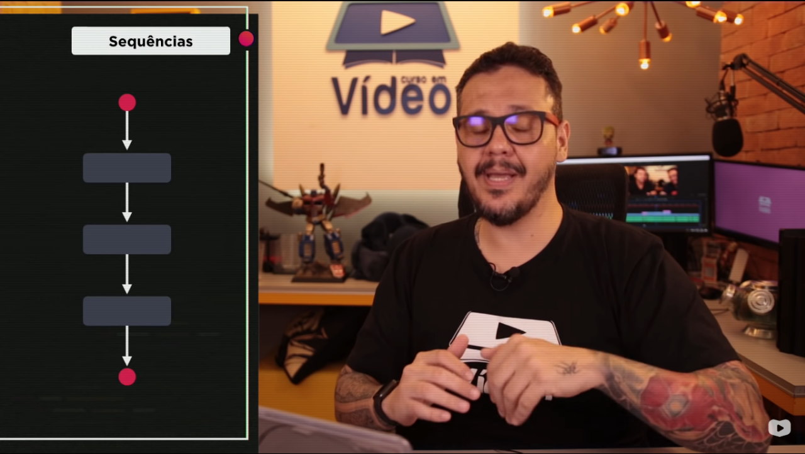
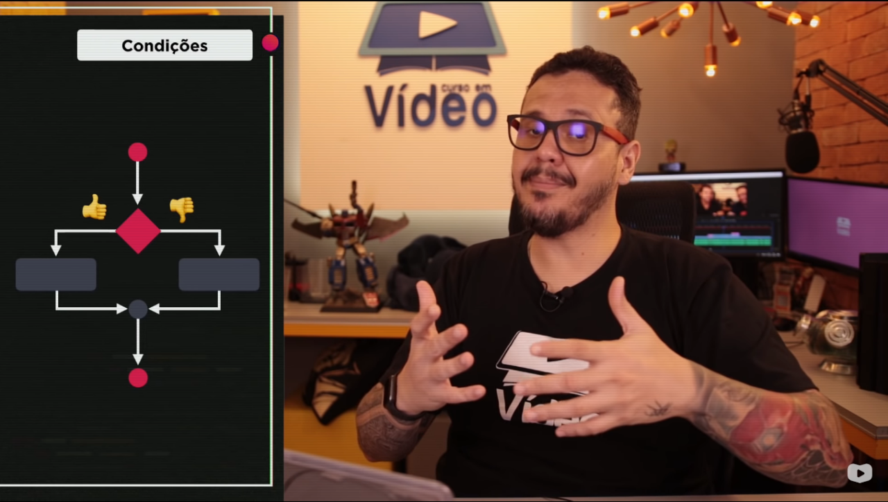
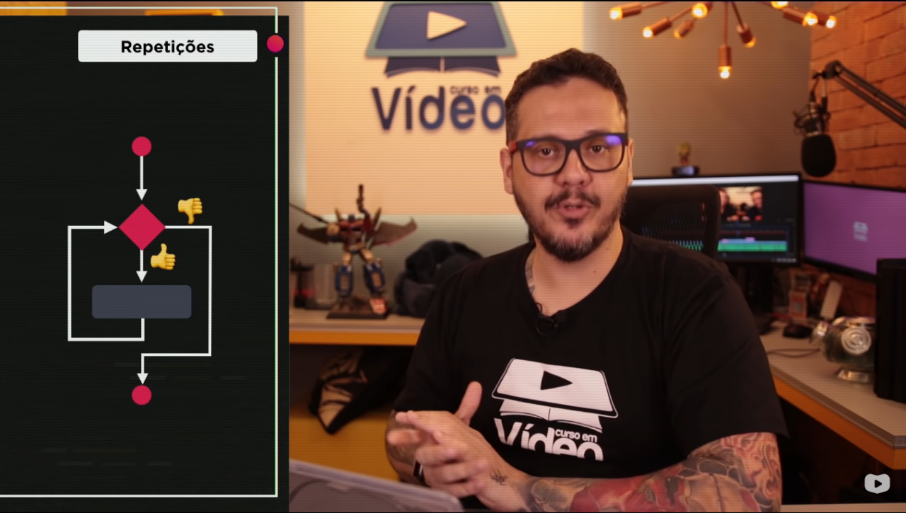

Professor explicando como uma função pre-determinada funciona, nesse exemplo o usuário pretende comer uma pizza inteira (por pedaços) e a cada pedaço irá criar um método.
Professor explicando que a função anterior funcionava como uma "método sequencial", ou seja, do início ao fim, "ponto A ao ponto B"
Professor explicando que as condições também seguem um "método sequencial" mesmo tendo dois desvios "verdadeiro ou falso"
Professor explicando que as repetições funcionam de um modo diferente, ou seja, cada vez que a condição é verdadeira o método faz mais um loop, no entanto se a condição for falsa o método se encerra.

Professor explicando como funciona uma estrutura de repetição com teste lógico no início WHILE
Professor explicando como funciona uma estrutura de repetição com teste lógico no final DO WHILE